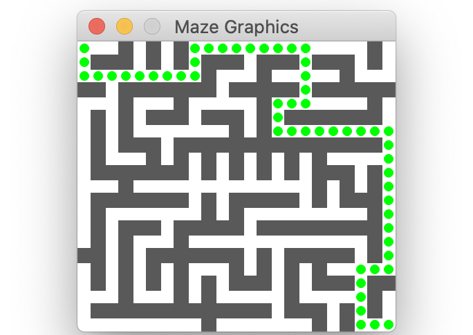

A maze is a twisty arrangement of corridors that challenges the solver to find a path from the entry to the exit. This part of the assignment is about using ADTs to represent, process, and solve mazes.

An introduction to mazes
Labyrinths and mazes have fascinated humans since ancient times (remember Theseus and the Minotaur?), but mazes can be more than just recreation. The mathematician Leonhard Euler was one of the first to analyze mazes mathematically, and in doing so, he founded the branch of mathematics known as topology. Many algorithms that operate on mazes are closely related to graph theory and have applications to diverse tasks such as designing circuit boards, routing network traffic, motion planning, and social networking.
Your goal for the maze portion of the assignment to implement neat algorithms to solve a maze, while gaining practice with ADTs.
Before jumping into the code, please carefully read this background information on how we will represent mazes, which ADTs to use, and the format of the provided maze data files.
A Grid represents a maze
A maze can be modeled as a two-dimensional array where each element is either a wall or a corridor.
- The
Gridfrom the Stanford library is an ideal data structure for this. A maze is represented as aGrid<bool>. - Each grid element is one "cell" of the maze. The element at location (row, col) is
truewhen there is an open corridor at that location andfalseif it is a wall.
A maze is read from a text file. Each line of the file is one row of the maze. Within a row, the character @ is a wall, and - is a corridor. Here is a sample 5x7 maze file (5 rows by 7 columns):
-------
-@@@@@-
-----@-
-@@@-@-
-@---@-
A GridLocation is a struct containing fields row and col
The GridLocation is a companion type to represent a location in a Grid. A GridLocation has two fields, row and col, that are packaged together a C++ struct. The sample code below demonstrates using a GridLocation variable and assigning and accessing its row and col fields.
// Declare a new GridLocation
GridLocation chosen; // GridLocation provides default initialization to 0,0
chosen.row = 3; // assign row of chosen location to 3
chosen.col = 4; // assign col of chosen location to 4
// Alternative way to initialize row,col when declaring a GridLocation
GridLocation exit = { maze.numRows()-1, maze.numCols()-1 };
// Can use a GridLocation to index into a Grid
// Below test checks whether chosen location is an open corridor
if (maze[chosen]) // chosen was set to {3, 4} so this accesses maze[3][4]
...
// Can compare two GridLocations for equality
if (chosen == exit)
...
// Can access the GridLocation's row & col fields by name using dot syntax
if (chosen.row == 0 && chosen.col != 0)
...
A Vector of GridLocations is a path
A path through the maze is an ordered sequence of connecting GridLocations. Using a Vector<GridLocation> is just right! A valid maze solution path starts at the maze entrance, steps through connecting GridLocations, and ends at the maze exit.
In the "Other files/res" folder, a .soln text file contains a solution for the corresponding maze files. Here is the solution file for the 5x7 maze shown earlier. The solution path is a sequence of 11 GridLocations, starting at r0c0 (row 0, col 0), and ending at r4c6.
{r0c0, r0c1, r0c2, r0c3, r0c4, r0c5, r0c6, r1c6, r2c6, r3c6, r4c6}
Our starter code provides the function readSolutionFile that reads a solution path into a Vector<GridLocation>. Not every provided maze has a corresponding .soln file, part of your job will be to write code to generate solutions!
Resources for the Stanford ADTs
- Documentation for Stanford collections: Grid, GridLocation, Stack, Queue, Vector
- Section 6.1 of the textbook introduces
structtypes - In the lower-left corner of your Qt Creator window, there is a magnifying glass by a search field. If you type the name of a header file such as
grid.horgridlocation.h, Qt will display the corresponding header file. - A few reminders for using our ADT/templates:
- The assignment operator for our ADTs makes a deep copy. Assigning from one Vector/Set/Stack to another creates a copy of the ADT and a copy of all its elements.
- When using a C++ template, the type name must include the type of element being stored. Declaring a
Vectorwithout specifying the element type just won't fly, and aVector<int>is not the same thing as aVector<string>. The error messages you receive when you have mismatches in template types can be cryptic and hard to interpret. Bring your template woes to LaIR or the Ed forum, and we can help untangle them with you.
On to the code!
In maze.cpp, you will write two helper functions that process grids and paths and two maze-solving functions. You will also be writing comprehensive test cases.
1) Write helper function generateValidMoves()
Your first task is to implement the helper function to generate the neighbors for a given location:
Set<GridLocation> generateValidMoves(Grid<bool>& maze, GridLocation cur)
Given a maze represented as a Grid of bool and a current GridLocation cur, this function returns a Set of all valid moves from cur. Valid moves are those GridLocations that are:
- Exactly one "step" away from
curin one of the four cardinal directions (N, S, E, W) - Within bounds for the
Grid(hint: Grid has a handy inBounds check) - An open corridor, not a wall
There are a few provided tests for generateValidMoves, but these tests are not fully comprehensive. Write at least 3 additional tests to make sure your helper function works correctly. Remember to label your tests as STUDENT_TEST.
2) Write helper function validatePath()
Next you'll write a function to confirm that a path is a valid maze solution:
void validatePath(Grid<bool>& maze, Vector<GridLocation>& path)

The image above displays a valid solution; each colored dot marks a GridLocation along the path. A path is a valid solution to a maze if it meets the following criteria:
- The path is not empty
- The path starts at the entry (upper left corner) of the maze
- The path ends at the exit (lower right corner) of the maze
- Each location in the path is a valid move from the previous path location
- Hint: rather than re-implement the same logic you already did for
generateValidMoves, simply call that function and check whether a move is contained in the set of valid moves.
- Hint: rather than re-implement the same logic you already did for
- The path must not contain a loop, i.e. the same location cannot appear more than once in the path
- Hint: a
Set<GridLocation>is a good data structure for tracking seen locations and avoiding a repeat.
- Hint: a
The function validatePath completes successfully if all of the criteria for a valid solution are met. If it instead detects that the path violates one of the above constraints, validatePath should call the error function from error.h to report what is wrong. The error function stops execution and prints your explanatory message:
error("Here is my message about what has gone wrong");
The function validatePath will require careful testing to confirm that it correctly detects all forms of valid and invalid paths. We've provided a few tests to get you started, but you will need additional tests of your own to complete the job. Write at least 3 student test cases for validatePath.
Note the use of the new test types EXPECT_ERROR and EXPECT_NO_ERROR in our provided tests. An EXPECT_ERROR test case evaluates an expression, expecting that the operation will raise an error. While executing the test, the SimpleTest framework will "catch" the error, record that it happened, and resume. Because the error was expected, the test case is marked Correct. If an error was expected but didn't materialize, the test case is marked Incorrect. EXPECT_NO_ERROR operates in the reverse: it expects the code to run without errors and if so, it is Correct. If an error is raised, it is marked Incorrect. More information on the different test macros can be found in the CS106B Testing Guide.
After writing validatePath, not only will you be familiar with using the ADTs to represent mazes, now you have a function to help when testing the functions you will write next. Having thoroughly tested your validatePath on a variety of invalid paths means you can be confident that it is the oracle of truth when it comes to confirming a solution. Your future self thanks you!
Q5. After you have written your test cases, describe your testing strategy to confirm that your validatePath operates as intended. How confident are you that it works correctly in all cases?
Notes about our provided maze files
The starter project includes a res folder containing maze files of various sizes, some with solutions. The maze.cpp file includes code for the functions readMazeFile and readSolutionFile. We provide these files and code to help with your testing. Please use them! You can also create additional mazes of your own.
- All maze files are well-formed and can be successfully read by
readMazeFile. - The maze grid is rectangular and contains at least two rows and two columns.
- The grid locations at upper-left (entrance) and lower-right (exit) are both open corridors.
- All solution files are well-formed and can be successfully read by
readSolution File. - if a maze has a corresponding solution file, the solution file contains a path that is a valid solution for the maze.
- If a maze does not have a solution file, it may or may not be solvable.
3) Write solveMazeBFS()
Now you're ready to tackle the solve function that finds a solution path for a given maze.
bool solveMazeBFS(Grid<bool>& maze, Vector<GridLocation>& soln)
Solving a maze can be seen as a specific instance of a path-finding problem, where the challenge is to find a route from the entrance to the exit. Path-finding comes up in a variety of situations such as packet routing on the internet, robot motion planning, analyzing gene mutations, spell correction, and more.
Breadth-first search (BFS) is a classic and elegant algorithm for finding a path. A breadth-first search considers paths outward from the entry location in a radial fashion until it finds the exit. The first paths examined take one hop from the entry. If any of these reach the exit location, success! If not, the search expands to those paths that are two hops long. At each subsequent step, the search expands radially, examining all paths of length three, then of length four, and so on, stopping at the first path that reaches the exit.
Breadth-first search is typically implemented using a queue. The queue stores partial paths that represent possibilities to explore. The first paths enqueued are all length one, followed by enqueuing the length two paths, and so on. Because a queue processing elements in FIFO order, all shorter paths are dequeued and processed before the longer paths make their way to the front of queue. This means paths are tried in order of increasing length and thus a solution path found via breadth-first search will be the shortest possible such solution.
At each step, the algorithm considers the current path at the front of the queue. If the current path ends at the exit, it must be a completed solution path. If not, the algorithm considers the current path, extends it to reach locations that are one hop further away in the maze, and enqueues those extended paths to be examined in later rounds.
Here are the steps followed by a breadth-first search:
- Create an empty queue of paths. Each path is a
Vector<GridLocation>and the queue of paths is of typeQueue<Vector<GridLocation>>.- A nested ADT type like this looks a little scary at first, but it is just the right tool for this job!
- Create a length-one path containing just the entry location. Enqueue that path.
- In our mazes, the entry is always the location in the upper-left corner, and the exit is the lower-right.
- While there are still more paths to explore:
- Dequeue the frontmost element from the queue. This is the current path.
- If the current path ends at exit:
- You're done, the current path is a solution!
- Otherwise:
- Determine the viable neighbors from the end location of the current path. A viable neighbor is a valid move that has not yet been visited during the search.
- For each viable neighbor, make copy of current path, extend by adding neighbor and enqueue it.
- Repeat step 3.
- If the queue of paths is empty, this maze has no solution.
Some details to keep in mind as you're implementing BFS:
- The search should not revisit previously visited locations or create a path with a cycle. For example, if the current path leads from location
r0c0tor1c0, you should not extend the path by moving back to locationr0c0. - You should not call
validatePathwithin yoursolveMazeBFSfunction, but you can call it in your test cases to confirm the validity of paths found bysolveMazeBFS. - If a solution was found, the function returns
trueand the pass-by-reference parametersolnstores the solution. If the maze could not be solved, the function returnsfalse. - For a helpful visualization and debugging aid, you can use our provided
mazegraphicsto add a graphical animation of the algorithm.
We have provided some tests to get your started. Add 2 or more student tests that further verify the correct functionality of the solveMazeBFS function.
4) Write solveMazeDFS()
Your final task for maze is to implement depth-first search:
bool solveMazeDFS(Grid<bool>& maze, Vector<GridLocation>& soln)
Depth-first search is an alternate path-finding algorithm that works similarly to breadth-first search, but tries the possible paths in a different order. Once a depth-first search starts on a path, it goes deep, continuing until it reaches its ultimate end and only if unsuccessful, moves on to try other paths. Both algorithms consider all possible paths in search of a solution, the difference being in which order they consider the paths.
The power of ADTs makes it magically easy to convert between the two algorithms. Depth-first search uses the same steps for a breadth-first search but everywhere you see queue with enqueue/dequeue operations, substitute a stack with push/pop operations. Whereas BFS uses a queue of paths, enqueuing paths to the back and dequeuing the next path to explore from the front, a DFS instead uses a stack and pushes paths to the top and popping the next path to explore from the top. Using a queue considers paths in FIFO (first-in-first-out) order , a stack will process the paths in LIFO (last-in-first-out) order.
This means that implementing solveMazeDFS is going to be a snap - just a switcheroo in which ADTs are being used. For this function:
- copy/paste your working implementation from
solveMazeBFS - change the data type of
allPathsfromQueue<Vector<GridLocation>>toStack<Vector<GridLocation>> - change Queue operations (enqueue/dequeue) into Stack operations (push/pop)
Voila, you've done it! Add tests to confirm the solutions found by solveMazeDFS are valid according to validatePath. You now have two powerful algorithms to solve a maze and have gotten lots of practice with ADTs – way to go! 👏 Congratulations! 👏
Q6. Most students are sold on the benefit of the fancy features provided by Vector, Grid, and Set but the ADT skeptics may question the value of Stack and Queue ADTs, seeing them as nothing more than a restricted Vector. Make your best argument to convince them of the benefits these ADTS have over Vector.
Graphics (optional)
As BFS or DFS is exploring various paths through the maze, you may be wishing you could follow along to ensure your algorithm is working as you intend. One good option is running under the debugger as you did in the warmup, watching how the variables change as you step through the code. We also thought an animation that shows the progress of the algorithm visually could be neat, so we wrote some graphic support routines that you can try out. This is entirely optional, but using them may help with your debugging and testing and just generally make the program more fun.
The provided mazegraphics module has functions to initialize the graphics for a maze and highlight the current path. Read the mazegraphics.h header file for more details about:
initGraphicsForMaze(Grid<bool>& maze, bool pauseForClick)highlightPath(Vector<GridLocation>& path, string color)
The general idea is to call initGraphicsForMaze once before starting the search. Each time you dequeue/pop a new current path, call highlightPath to display it. If you supply true as the second argument to initGraphicsForMaze, each call to highlightPath will pause and wait for the user to click before continuing. This gives you time to watch the animation and see how the path is updated and follow along with the algorithm and debug its operation.
There is no requirement that your solver animate its process, our testing will only confirm that you correctly find solution paths. If you don't think the animation will be valuable or you find it that it introduces more problems than it solves, you are free to skip it.
References
There are many interesting facets to mazes and much fascinating mathematics underlying them. Mazes will come up again several times this quarter. Chapter 9 of the textbook uses a recursive depth-first search as path-finding algorithm. At the end of the quarter when we talk about graphs, we'll explore the equivalence between mazes and graphs and note how many interesting results in mazes came from breakthroughs in graph algorithms.
- Walter Pullen, Maze Classification. http://www.astrolog.org/labyrnth/algrithm.htm Website with lots of great info on mazes and maze algorithms
- Jamis Buck. Maze Algorithms. https://www.jamisbuck.org/mazes/ Fun animations of maze algorithms. He also wrote the excellent book about Mazes for Programmers: Code Your Own Twisty Little Passages.
Extensions
If you have completed the assignment and want to explore further, here are some ideas for extensions.
- Instead of reading pre-written mazes from a file, you could instead generate a new random maze on demand. There are an amazing (I could not resist…) variety of algorithms for maze construction, ranging from the simple to the sublime. Here are a few names to get you started: backtracking, depth-first, growing tree, sidewinder, along with algorithms named for their inventor: Aldous-Broder, Eller, Prim, Kruskal, Wilson, and many others.
- Try out other maze solving algorithms. How does BFS and DFS measure up against the approaches in terms of solving power or runtime efficiency? Take a look at other solvers such as random mouse, wall following, recursive depth-first, Bellman-Ford, or others.
- There are many other neat maze-based games out there that make fun extensions. You might gather ideas from Robert Abbott's http://www.logicmazes.com or design a maze game board after inspiration from these musings on mazes from Chris Smith.
The last word from XKCD https://xkcd.com/2407/